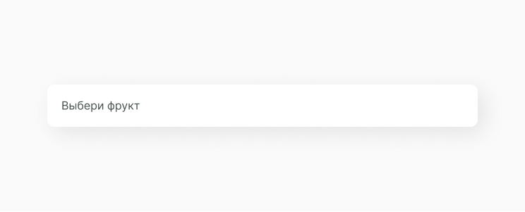
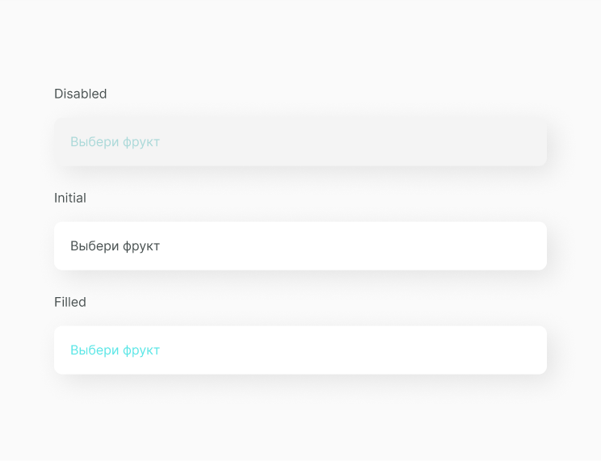
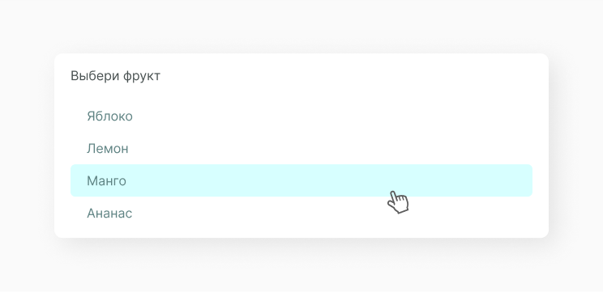
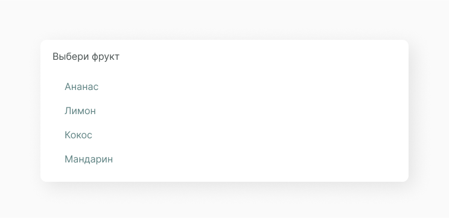

Select Input
Тег <select> (от англ. select — выбрать) позволяет создать элемент интерфейса в виде раскрывающегося списка, а также список с одним или множественным выбором.
В основном select input используют в различных формах входа или заполнения данных, когда нужно сделать единичный выбор из выпадающего option list.
Структура компонента
Select input состоит из поля input с атрибутом placeholder, option list и, в зависимости от функционала, иконки chevrone, которая анимируется во время пользовательского действия. Этот пример не содержит chevrone, так как option list открывается при нажатии на input.
Placeholder
Текст placeholder обычно имеет более светлую расцветку и содержит информацию о том, какое действие должен совершить пользователь.
Состояние компонента
Исходя из структуры, мы можем выявить несколько состояний компонента с данными и без них.
А также состояние select input, когда открыт option list.
Реализация
Компонент должен принимать параметры: placeholde, value, onChange, onFocus. А также мы создаем коллекцию из option item, но стили для нее прописываем в A_SelectIput.scss.
import React, { PureComponent } from 'react'
import A_Input from '../../atoms/A_Input/A_Input.jsx'
import A_OptionItem from '../../atoms/A_OptionItem/A_OptionItem.jsx'
import './O_Select.css'
export default class O_Select extends PureComponent {
constructor(props) {
super(props)
this.state = {
value: '',
options: props.options,
showOptions: false,
disabled: props.disabled
}
}
setVisibleOptions = (visible) => {
if (this.state.disabled) {
return
}
this.setState((preState) => ({
...preState,
showOptions: visible
}))
}
handleSelectOption = (id, value) => {
this.setState((prevState) => ({
...prevState,
value: value,
showOptions: false
}))
}
handleChangeValue = (e) => {
this.setState((prevState) => ({
...prevState,
value: e.target.value
}))
}
render() {
const { placeholder } = this.props
const { options, showOptions, value } = this.state
const optionElements = options.map((option) => (
<A_OptionItem
key={option.id}
id={option.id}
value={option.value}
onSelect={this.handleSelectOption}
/>
))
const optionCollection = (
<div className="C_OptionsList">{optionElements}</div>
)
return (
<div className="O_Select">
<A_Input
placeholder={placeholder}
value={value}
onChange={this.handleChangeValue}
onFocus={() => {
this.setVisibleOptions(true)
}}
/>
{showOptions && optionCollection}
</div>
)
}
}Прописываем стили для select input и среду option list.
.O_Select {
box-shadow: 9px 9px 35px rgba(0, 0, 0, 0.09);
margin: 20% auto;
width: 610px;
border-radius: 10px;
}
.O_Select .C_OptionsList {
margin-top: -15px;
background-color: #fff f;
padding: 40px 20px 20px 20px;
}Мы создали компонет, но описали только его функционал, теперь его нужно отрендерить. Выведи получившийся компонент согласно своей структуре проекта. Ты можешь увидеть как это делаем мы, а также посмотреть получившийся select input.
import React from 'react'
import ReactDOM from 'react-dom'
import O_Select from '../../components/organisms/O_Select/O_Select.jsx'
const options = [
{
id: '1',
value: 'Ананас'
},
{
id: '2',
value: 'Лемон'
},
{
id: '3',
value: 'Кокос'
},
{
id: '4',
value: 'Мандарин'
}
]
document.addEventListener('DOMContentLoaded', () => {
ReactDOM.render(
<O_Select placeholder="Твой любимый фрукт" options={options} />,
document.body.appendChild(document.createElement('div'))
)
})Получаем следующий результат:
Ссылки
Также для тебя ссылки на Figma с дизайн системой и GitHub с библиотекой компонентов.
Составляющие
В этот компонент часто выводятся следующие компоненты.
Input
Функциональный элемент взяимодействия с интерфейсом.
Option Item
Функциональный элемент выпадающего спасска.
Этот компонент часто выводится в следующих компонентах.